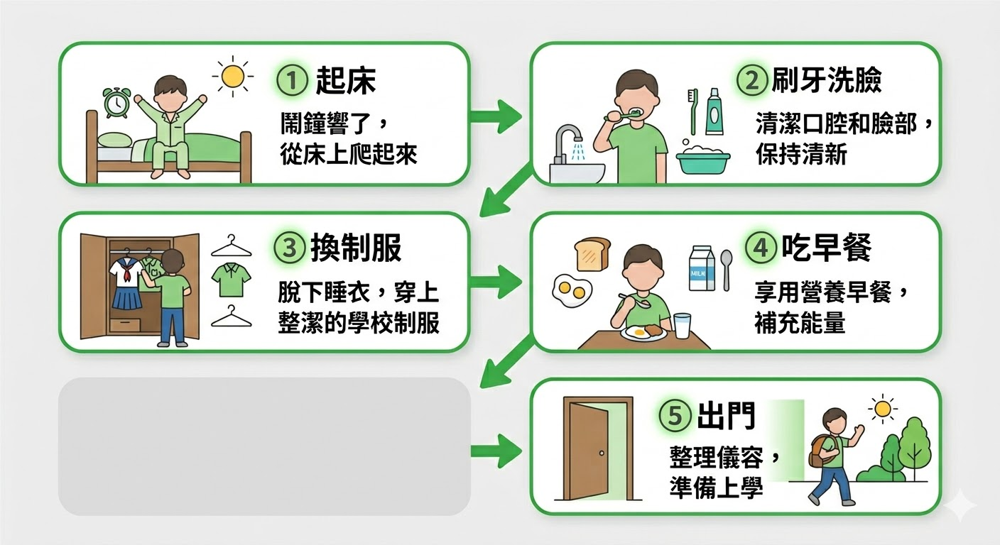
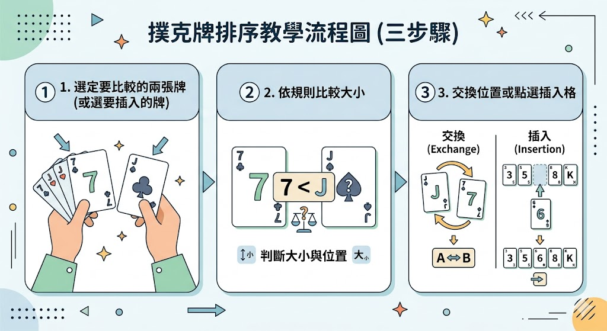
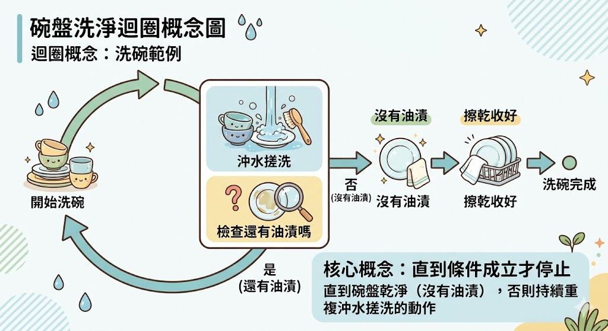
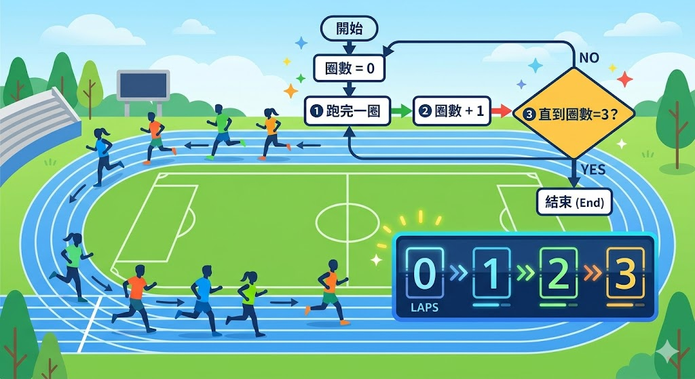
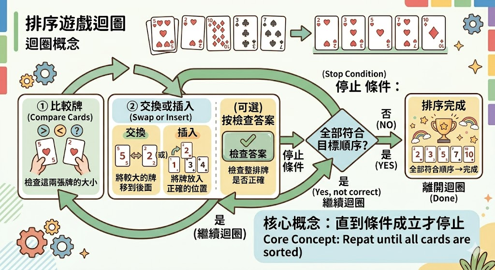
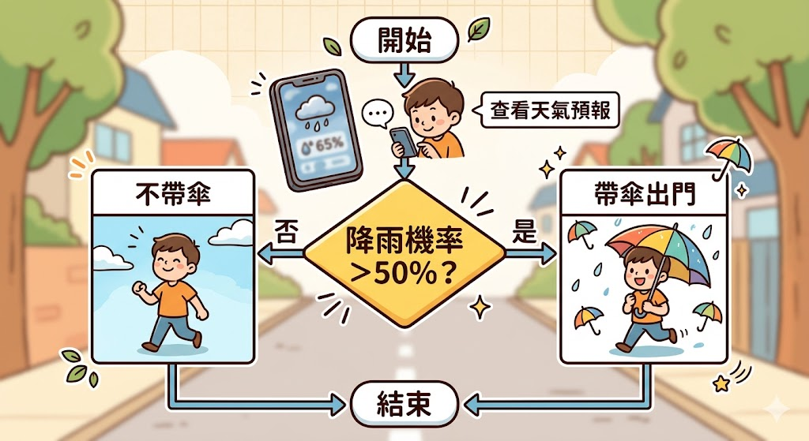
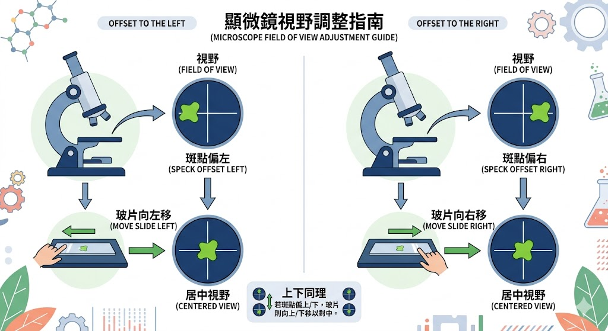
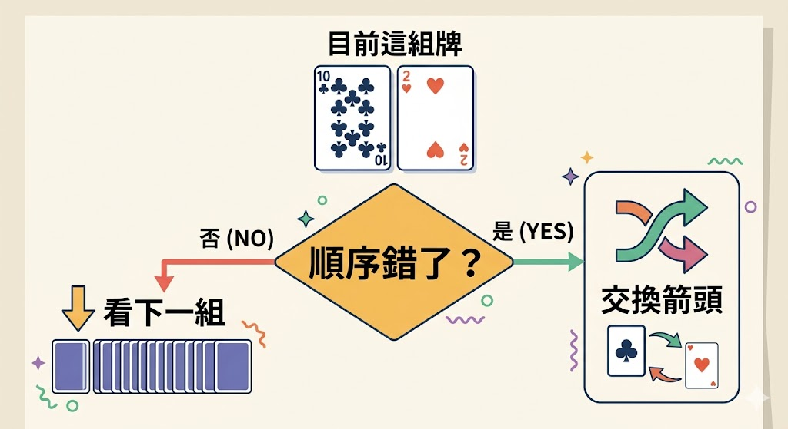
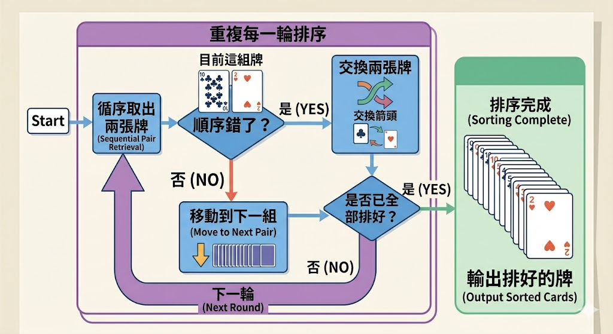

📐 演算法中的結構：循序、迴圈、邏輯判斷
許多演算法都可以拆成三種基本結構的組合：循序（照順序做）、迴圈（重複做直到條件成立）、邏輯判斷（依條件走不同路）。本頁以生活例子、排序遊戲與流程示意圖對照，方便獨立上一堂課。
迴圈
同一組步驟重複執行，直到滿足「停止條件」才離開。
邏輯判斷
依條件真假決定下一步走哪一條路（分支）。
1 循序（Sequence）
演算法像食譜：先 A、再 B、再 C。順序錯了，結果可能就錯。
生活例子：早上準備上學

循序：五個步驟固定先後，通常不會顛倒順序。
重點：這些步驟有先後關係；通常不會「先出門再刷牙」。
對應本遊戲：排序的一小段操作

每一輪裡「先比較、再動牌」也是循序。
重點：每一輪裡，「先比較、再決定要不要動」也是循序結構。
2 迴圈（Loop / 重複）
當同一件事要做「很多次」，但不知道要幾次才夠時，就用迴圈：重複執行一段步驟，直到停止條件成立。
生活例子：洗碗洗到乾淨為止

停止條件：碗已乾淨；若缺少停止條件可能變成無窮迴圈。
停止條件：碗已經乾淨。若沒有停止條，可能會一直洗下去（無窮迴圈）。
生活例子：操場慢跑 3 圈

計次迴圈：停止條件是圈數達到約定的次數。
重點：這種是「數清楚要跑幾次」的迴圈，停止條件是圈數達到 3。
對應本遊戲：排到全部正確

氣泡、選擇、插入等排序都含有「重複多輪直到排好」的迴圈精神。
重點：氣泡排序「一輪一輪掃過去」、選擇排序「一輪找一個放到定位」，本質上都含有迴圈 + 內層循序或判斷。
3 邏輯判斷（Selection / 條件分支）
流程走到某一步時，要看條件決定走 A 路還是 B 路。常寫成「如果……否則……」（if / else）。
生活例子：要不要帶傘

邏輯判斷：條件不同，後續步驟就不同。
重點：判斷不是額外附加的，而是流程裡的一個節點；不同的條件會讓後續步驟不同。
生活例子：顯微鏡—影像偏一邊時怎麼移玻片

大問題可拆成「左右」「上下」等較小判斷再合併。
重點：先把「大問題」拆成「左右」「上下」兩個小判斷，再合併決策。可到
演算法生活實驗室 做互動練習。
對應本遊戲：比較後要不要交換

插入排序也會依條件決定插入位置，同樣是分支。
重點：插入排序也會有判斷：「key 應該插在這格的左邊還是右邊？」都是流程中的分支。
🔗 三種結構常一起出現
真實的演算法多半是：循序裡面包迴圈，迴圈裡面又有判斷。例如：

可搭配手繪流程圖練習：長方形＝步驟、菱形＝判斷、回到上一層的箭頭＝迴圈。
教學建議：可先讓學生用生活例子畫流程圖（長方形＝步驟、菱形＝判斷、箭頭往回＝迴圈），再對照遊戲中的操作。